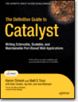

What is Catalyst?
Catalyst is an open-source Perl MVC web framework that encourages rapid development and clean design without getting in your way by forcing rules.
We tend to keep things small and simple. This gives us robustness and scalability - your Catalyst-based app also inherits those. No complicated object hierarchies.
Why reinvent the wheel? When you write your app with Catalyst, you don't have to care much about session handling or authorization. You just use it. CPAN has a vast amount of power, which we bring to you. If you don't like something in default setup, why not replace it? There Is More Than One Way To Do It. You can choose from a wealth of available models and views, drop in a bunch of plugins and create the setup that fits you best.
Many high-profile sites like the BBC iPlayer, 123people, magazines.com and urbia.de are already using Catalyst. Check out some other sites which are using Catalyst.
Why Catalyst?
Versatile Models
Use a powerful database ORM like DBIx::Class for your model, plain old DBI or even LDAP - Catalyst supports a wide range of models.
Flexible Views
Use whatever templating language you like best: Template::Toolkit, Mason 2, HTML::Template and many more are fully supported.
Integrated Development server
Catalyst comes with its own lightweight test server for development. It automatically restarts when your sources have changed, so you get instant results!
Works with all major webservers
Catalyst 5.9 has native PSGI/Plack support which makes deployment for most webservers a no-brainer. Plus, there are loads of engines targeting specific servers/protocols like Apache/mod_perl or FastCGI.
Ready-to-use plugins
Don't re-invent the wheel! Use well-tested plug-ins for session management, user authentication, caching and much more.
How do I get started?
-
Quick Install Guide
For more details and other platforms read the extended Installing Catalyst guide.
-
Tutorial
Learn how to build your first complete Catalyst application with all the nuts'n'bolts of modern web applications.
Get the book
The Definitive Guide to Catalyst
This book by Kieren Diment, Matt Trout and other core Catalyst developers, published by Apress is now available for purchase from Amazon.com, or get the eBook (PDF) from Apress.
Sites using Catalyst
- BBC iPlayer TV and radio highlights (mention)
- www.123people.com Realtime people search engine (mention)
- www.urbia.de Germany's most popular community for all things family Alexa Traffic Rank: 6,092
- Magazines.com Magazines.com is the oldest, the largest, and the most dependable magazine subscription service on the Internet. Alexa Traffic Rank: 11,163
- www.freecycle.org Changing the world one gift at a time Alexa Traffic Rank: 14,411
- www.tripwolf.com Your travel guide (mention) Alexa Traffic Rank: 16,603
- Manchester Evening News Site of the English daily newspaper (announcement) Alexa Traffic Rank: 16,860
- Foxtons.co.uk London's Leading Estate Agent. Alexa Traffic Rank: 20,962
- www.evo.com Eco-friendly products, services, and information (announcement) Alexa Traffic Rank: 41,854
- takkle.com High School Sports Social Network. Alexa Traffic Rank: 43,646
- Mister Poll Online polls (announcement) Alexa Traffic Rank: 68,363
- iusethis.com Organize and discover apps. Alexa Traffic Rank: 71,957 For tips and tricks from behind the scenes of the iusethis development check out Marcus' Bag of Tricks from IUseThis talk.
You'll find more sites using Catalyst in the Catalyst wiki.